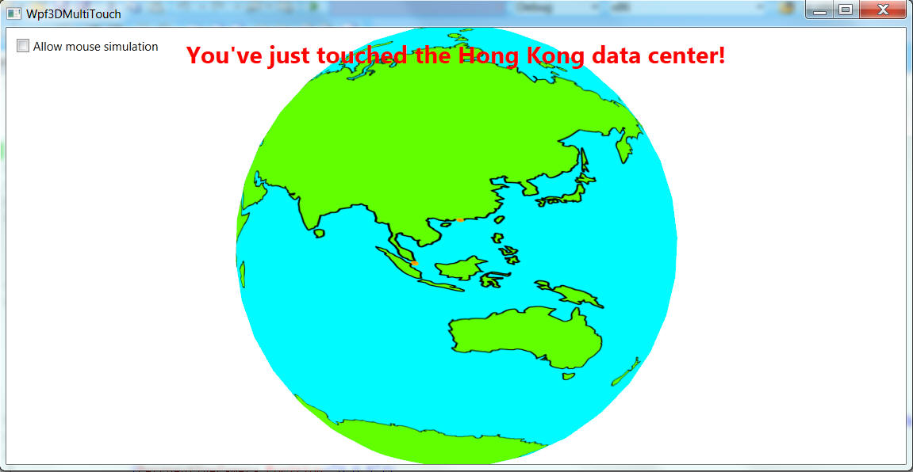

This sample demonstrates how to use WPF 4's multi-touch events to manipulate a 3D scene. It renders an earth. You can use your fingers to rotate the earth in any directions (not only along the latitudes and the longitudes). You can also use the standard scale (zoom) gesture to scale the earth. If you happen to touch a circle that represents a Windows Azure data center, a notification message will be displayed on the window.
If you don't have a touch screen, you can use the mouse to simulate the behavior. In the sample code, you will discover that to implement multi-touch is actually simpler than to implement mouse events, thanks to the manipulation framework provided by WPF.

For this sample to work, you must have Visual Studio 2010 and .NET 4. You must use Windows 7. You also need to have a Windows 7 compatible multi-touch screen. If you don't have a touch screen, you can still use mouse to manipulate the earth, but you won't be able to enjoy the fun provided by the touching experience.
Windows 7 has built-in support for multi-touch screens. If you don't have much experience in using a multi-touch screen, it is highly recommended that you watch this video: http://windows.microsoft.com/en-us/windows7/help/videos/using-windows-touch. It tells you how to use multi-touch as an end user.
As a developer, you can also create your own applications that support multi-touch. You can use Windows native APIs in native applications, or you can use WPF APIs in managed applications. This sample uses managed code. For a sample on how to create a native image viewer that supports multi-touch, please refer to the CppWin7MultiTouch sample in All-In-One Code Framework.
Working with multi-touch in managed code is much easier than in native code. You can find a "Creating Your First Touch Application" tutorial on MSDN. It walks through how to create a graphic viewer that supports multi-touch, similar to what we demonstrate in our CppWin7MultiTouch sample. You can change the Rectangle in the tutorial to an Image, a MediaElement, or whatever you like. So this sample will not repeat what is already covered in the MSDN tutorial. It assumes you've already walked through the getting started tutorial.
It is a common requirement for games, educational software, and potentially other kinds of applications, to allow users to manipulate a star/planet such as an earth using the mouse. With Windows 7, you can now do that using your fingers, which provides a more natural navigation experience. This is what we demonstrate in our sample.
To provide such experience in your WPF application, first you must understand how to create basic 3D scenes. Please refer to the related MSDN documents on http://msdn.microsoft.com/en-us/library/ms747437.aspx. All the SDK document samples, basic and advanced, can be downloaded from http://code.msdn.microsoft.com/wpfsamples/. We will not repeat those samples in All-In-One Code Framework. This sample assumes you've already studied the SDK samples, especially the 3DOverview sample.
There're two important code files in this sample:
Provides a reusable element that renders a sphere. You can use it in other applications (touch enabled or not) as well. For example:
<shapes:Sphere>
<shapes:Sphere.Material>
<DiffuseMaterial>
<DiffuseMaterial.Brush>
<SolidColorBrush Color="Red"/>
</DiffuseMaterial.Brush>
</DiffuseMaterial>
</shapes:Sphere.Material>
</shapes:Sphere>
By default, it renders a ball. To render a sphere, you can control the x,y,z radius using transforms.
The Sphere class derives from UIElement3D. UIElement3D is essentially a 3D control that supports input and other user interactions. You can use it as if it is a standard WPF UIElement, expect that it must be contained in a Viewport3D. For example, you can click or touch a ball, handle the mouse/touch event, and do whatever you like.
This is the main window's code behind. It handles the touch and mouse events. There're 3 kinds of touch related events provided in WPF: raw touch events, manipulation events, and inertia events.
Raw touch events can be handled in two ways:
Handle the TouchDown/Move/Up events. They're very similar to mouse events. In this sample, we handle the TouchUp event. So if you happen to touch a Windows Azure data center, a message will be displayed to notify you. These events are easier to handle, but they don't allow you to deal with multi-touch. They only report a single finger. Please refer to the OnTouchUp method and the DoHitTest method for more information.
Handle the Touch.FrameReported event. This event allows you to unleash the true power of multi-touch. You can handle for more than one fingers. In this sample, if you touch the screen with 2 or more fingers, when you release the second finger, a line will be drawn on the screen that connects your first finger and second finger. Please refer to the Touch_FrameReported method for more information. Note this behavior cannot be simulated by mouse unless you use the MultiPoint SDK, which allows you to connect multiple mice to a single computer. This is a WPF extension, and will not be demonstrated in this sample.
Manipulation events encapsulate the standard multi-touch gestures. If you're working with a 2D application, you can translate/rotate/scale the scene using the data reported in the event args without any custom calculation! That's why we say touch events are easier to handle than mouse events. Please refer to the MSDN tutorial for more information.
In a 3D scene, the scale gesture can also be used. When performing a uniform scale (ScaleX/Y/Z have the same values), scaling a 3D scene is the same as scaling a 2D scene. Translating a 3D scene is also identical to translating a 2D scene if you're translating in the XY plain. However, translating along the z axis is not supported by the out of box gesture, and rotation in a 3D environment is completely different from rotation in a 2D environment.
When working with mouse, the standard behavior to rotate a ball is to drag the mouse. Dragging mouse on a 2D object will instead translate it. So it makes sense to use the 2D translate gesture to rotate a 3D scene. In this sample, we first get a delta vector that represents how long has the finger moved (translated). Then we find a vector in the XY plain which is perpendicular with the delta vector. This new vector will be the rotation axis. This way, the earth always rotates along with your finger's movement.
Please refer to OnManipulationDelta method and the RotateEarth method for more information.
This sample does not translate the 3D scene. In most applications, you typically move the mouse to the edge of the screen, and the 3D scene will be translated. You can also drage mouse right button. This cannot be simulated easily using fingers. If your application wants to allow the user to translate the scene with fingers, you may consider to introduce custom gestures that do not conflict with built-in gestures. To implement custom gestures, you need to handle raw touch events.
Inertia events allow you to "throw" an object on the screen. Imagine you're moving an image. After you release your finger, the image can still move for a short amount of time. The velocity will become lower and lower and eventually it stops. This allows you to create the acceleration/deceleration behavior. We do not demonstrate inertia events in this sample. Please refer to the MSDN tutorial for more information.
Finally, when building a multi-touch enabled application, please bare in mind that lots of users do not have a touch screen yet. So you should provide alternative ways to interact with your application. This sample handles mouse events as well as the touch events. As you can see, you're required to write more code to implement the same features with mouse events. And this sample only implements a simple mouse navigation algorithm, so you'll find when using mouse, the rotation is not so smooth as when using fingers.
In the future, natural inputs such as multi-touch, camera, and voice will become more and more popular. We're no longer living in a world where computer input only supports mouse and keyboard. To build future aware applications, you should consider to optimize your application for new input solutions such as multi-touch, camera, and voice.
Windows 7 provides out of box support for multi-touch input. You can work with touch devices from both native applications and managed applications. Managed applications are much easier to write because of the robust framework provided by WPF. You can easily integrate multi-touch with other parts of the framework, such as 3D.